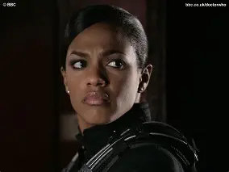
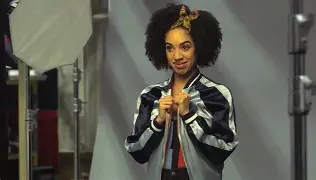

Os companheiros são figuras centrais de Doctor Who, variando em origem, habilidade e
personalidade, e são essenciais para as aventuras e desenvolvimento do caráter do Doutor,
garantindo narrativa dinâmica e ligação com o público.
Rose Marion Tyler é uma jovem inglesa de Londres, inicialmente vivendo uma vida comum como
vendedora de roupas e morando com sua mãe, Jackie Tyler, e mantendo um relacionamento com
Mickey Smith. Ela é apresentada no episódio de estreia da série em 2005, "Rose", onde é salva
pelo Nono Doutor de alienígenas conhecidos como Autons, controlados pela Consciência Nestene.
Após confrontar esses vilões, Rose aceita viajar com o Doutor na TARDIS, descobrindo aventuras
pelo tempo e espaço

Martha Jones é a primeira mulher negra a se tornar uma acompanhante regular do Doctor. Começa
como estudante de medicina no Royal Hope Hospital em Londres e, após ajudar o Doctor durante um
incidente em que o hospital é teleportado para a Lua, recebe o convite para viajar com ele
Donna Noble nasceu em Londres, filha de Geoff e Sylvia Noble, e neta de Wilfred Mott. Antes de
conhecer o Doutor, trabalhava em empregos temporários e levava uma vida comum, mostrando personalidade
extrovertida, franca e divertida. Durante seu casamento, no especial de Natal de 2006 The Runaway Bride,
ela foi acidentalmente transportada para a TARDIS devido a partículas Huon instaladas secretamente pelo
noivo Lance, aliado da Imperatriz Racnoss . Após ajudar o Doutor a derrotar a Racnoss e salvar sua festa
de casamento, Donna recusou inicialmente viajar com ele.
Amy Pond é uma escocesa que conhece o Doutor aos sete anos de idade, vivendo com sua tia em Inverness,
Escócia. Ela é apresentada no episódio “The Eleventh Hour” (2010), quando nota uma fenda misteriosa em
sua parede. O Doutor promete retornar para levá-la em sua nave, a TARDIS, mas chega 12 anos depois, momento
em que Amy já é adulta e cética sobre a “promessa daquele homem estranho” Aventuras e Desenvolvimento.
Como adulta, Amy trabalha como kissogram (entregadora de mensagens de forma fantasiosa) e logo decide
viajar com o Doutor. Ela é posteriormente casada com Rory Williams, seu amigo de infância, que se torna
seu companheiro nas viagens pelo tempo e espaço . Entre suas aventuras, Amy enfrenta ameaças como os
Silurians, os Weeping Angels e participa de eventos complexos ligados à Pandorica e às fendas do universo
Clara Oswald viaja com o Décimo Primeiro e Décimo Segundo Doutor, com múltiplas encarnações que ajudam
a moldar seu mistério e suas aventuras no tempo.

Bill Potts é uma companheira do Décimo Segundo Doutor, conhecida por sua curiosidade, espírito aventureiro
e por ser a primeira companheira abertamente gay do programa.
Yasmin "Yaz" Khan é uma das companheiras da Décima Terceira Doutora, é uma jovem policial de Sheffield que
viaja pelo tempo e enfrenta diversas aventuras espaciais e históricas.
Ruby Sunday é uma acompanhante do Décimo Quinto Doutor na série Doctor Who, com uma história marcada por
mistério, aventuras e descobertas sobre sua família biológica.